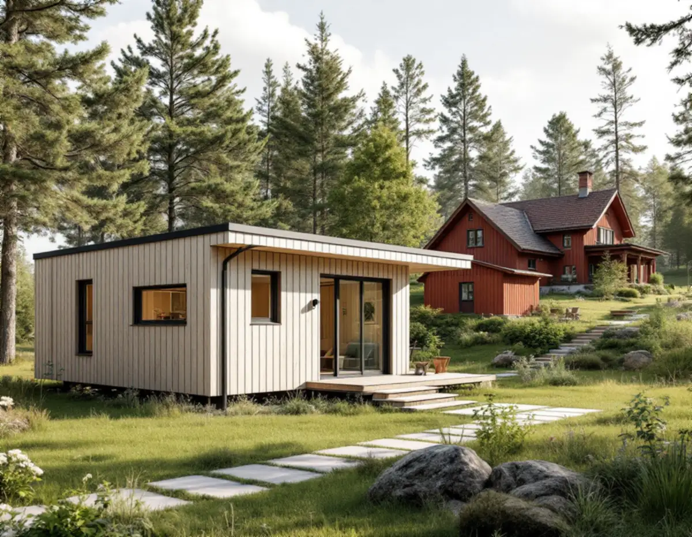
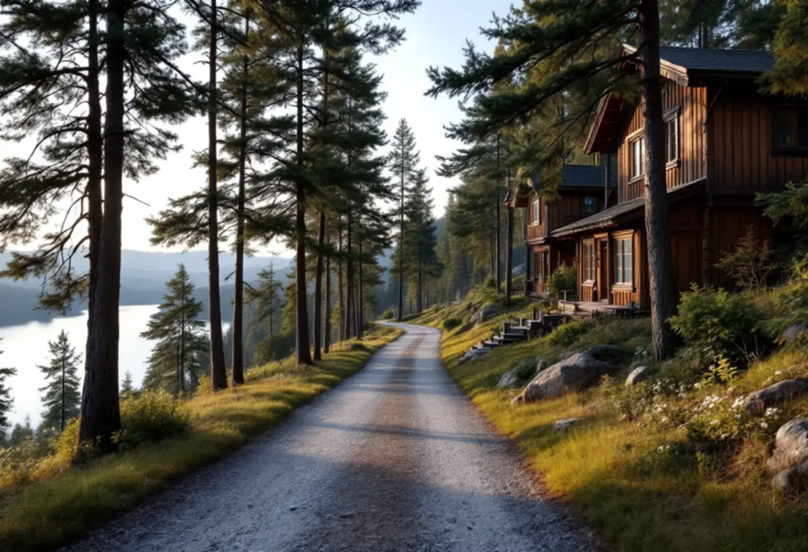
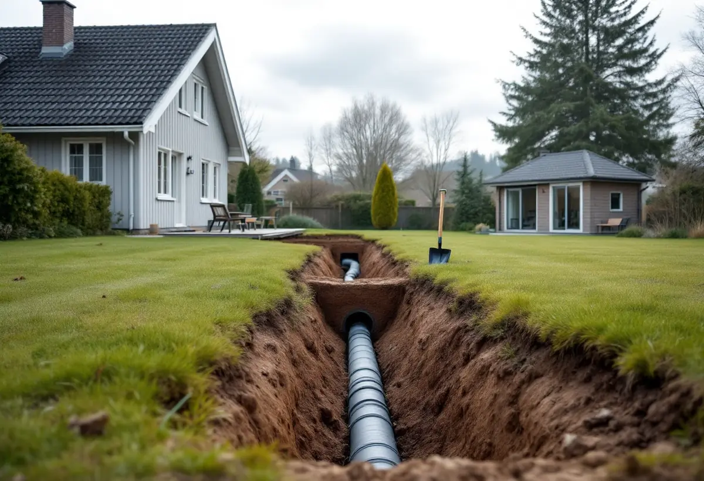

Platsbesök
Vi mäter allt som redan står på tomten och räknar potten.
Upplands Väsby kommun använder inte längre orden friggebod och attefallshus – allt kallas lovfri komplementbyggnad. Reglerna är desamma i grunden, men kommunen förklarar dem med egna exempel. Geal Entreprenad AB räknar på din tomt och bygger komplementbostadshuset nyckelfärdigt.

Kommunen skriver att termerna friggebod och attefallshus inte längre gäller efter ändringarna i plan- och bygglagen. I stället används begreppet lovfri komplementbyggnad, och i det ingår komplementbostadshus – en komplementbyggnad avsedd för permanentboende. En komplementbyggnad ska vara fristående och inte sitta ihop med huvudbyggnaden.
Inom detaljplan får alla komplementbyggnader på tomten tillsammans vara högst 45,0 kvadratmeter, och den största högst 30,0 kvadratmeter. Utanför detaljplan är gränserna 65,0 och 50,0 kvadratmeter. Nockhöjden får vara högst 4,0 meter inom plan och 4,5 meter utanför, och byggnaden ska vara mindre än huvudbyggnaden.

Kommunen ger ett tydligt exempel. Har du inom detaljplan redan byggt en friggebod på 15 kvadratmeter och ett attefallshus på 20 kvadratmeter utan lov, har du bara 10 kvadratmeter kvar att bygga lovfritt. Ett annat exempel: ett garage på 35 kvadratmeter kan inte byggas lovfritt inom plan, även om potten inte är utnyttjad, eftersom den största byggnaden får vara högst 30 kvadratmeter.
Vi börjar därför varje projekt i Upplands Väsby med att mäta allt som redan står på tomten. Det avgör om ett komplementbostadshus kan byggas utan lov, om det behöver bli mindre eller om det är bättre att söka bygglov direkt.
Ska komplementbyggnaden ha vatten eller avlopp skriver kommunen att du behöver betala en VA-avgift, och att det gäller även om du inte gör några nya anslutningar utan kopplar på den befintliga anslutningen på tomten. Installation eller väsentlig ändring av VA, eldstad, rökkanal eller ventilation kan dessutom kräva anmälan.
Kommunen påminner också om att en lovfri komplementbyggnad inte får vara en betydande olägenhet för omgivningen, och att samma krav på utformning, gestaltning och tekniska egenskaper gäller som för en lovpliktig byggnad. Det är alltså inte enklare att bygga – bara att slippa ansökan.
Kommunens kunskapsunderlag för kulturmiljö pekar ut Bollstanäs–Gamla vägen som särskilt värdefullt bebyggelseområde enligt plan- och bygglagen. Där finns villor från sekelskiftet 1900 på stora tomter i en sluttning ner mot Norrviken, med grusvägar som följer terrängen. Enligt kommunen krävs bygglov för en komplementbyggnad inom ett kulturhistoriskt särskilt värdefullt område.
Underlaget räknar enkla, äldre uthus byggda i anslutning till huvudbyggnaden till områdets bevarandevärda karaktärsdrag, och ger råd om att ny bebyggelse ska vara mindre volymer med bevarad öppenhet mellan tomterna. Större volymer, schaktning och höga stödmurar bör undvikas. Ett gårdshus här ritar vi därför lågt och enkelt, anpassat till marken. Måtten finns samlade i reglerna för attefallshus.

Vi mäter allt som redan står på tomten och räknar potten.
Detaljplan och kunskapsunderlaget kontrolleras.
Ett hus som ryms i potten och passar platsen.
Bygglov där det krävs, annars anmälan för installationerna.
Grund, stomme, tak och installationer fram till nyckelfärdigt.
Huset tas i bruk när slutbeskedet har kommit.
Skatteverket skriver att det inte går att få rotavdrag för att bygga en helt ny bostad, och inte heller för ett nytt hus, en friggebod, ett garage eller en liknande fristående byggnad. Ett komplementbostadshus står fritt på tomten, så kostnadsförslaget för huset räknas utan avdrag.
Husets storlek och planlösning, om bygglov behövs, kök och badrum, grundläggning i sluttning, VA-avgiften och ledningsdragningen. Efter ett gratis platsbesök får du ett skriftligt kostnadsförslag.
Komplementbostadshus på tomten.
Attefallshus →Takbyte, takbesiktning och plåtarbeten.
Takläggare i Upplands Väsby →Bollstanäs, Vilunda och Runby.
Takrenovering i Upplands Väsby →Radhus, suterräng och samfälld VA.
Badrumsrenovering i Upplands Väsby →Karta, VA och tomtgräns.
Byggföretag i Upplands Väsby →Sekelskiftesvillorna längs Gamla vägen.
Fasadmålning i Upplands Väsby →Radhus från 70-talet och hus från bomässan.
Fasadrenovering i Upplands Väsby →Inflygning, trafik och tystare fönster i Väsby.
Fönsterbyte i Upplands Väsby →Kedjehusens fönster, kulör och beslag.
Fönsterrenovering i Upplands Väsby →Kedjehus, suterräng och radon.
Golvläggare i Upplands Väsby →Slipa trägolvet i radhuset på platta.
Golvslipning i Upplands Väsby →Radhus, kedjehus och atriumhus.
Köksrenovering i Upplands Väsby →Radhus, kedjehus och villor i Väsby.
Målare i Upplands Väsby →Rännor, stuprör och radhusplåt i Väsby.
Plåtslagare i Upplands Väsby →Altan, plank och förråd vid radhus och kedjehus.
Snickare i Upplands Väsby →Nytt tak, solceller och väderradarn.
Takbyte i Upplands Väsby →Radhusen och plasttapeten.
Tapetsering i Upplands Väsby →Radhus, kedjehus och utpekade områden.
Tillbyggnad i Upplands Väsby →Äldre villor, radhus och varsamhet.
Totalrenovering i Upplands Väsby →